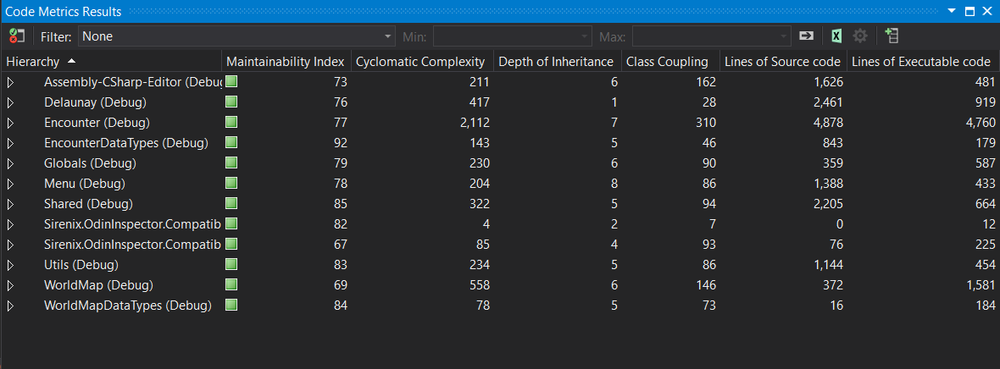

Lost In The Open
is a top-down turn-based strategy rougelike.
It is a large-scale project with 14000+ lines of source code spread over 300+ C# files. It has two main
components of gameplay.
Strategic decision-making for navigating the world map and tactical combat for surviving enemy encounters.
There are numerous systems designed to support this dynamic gameplay. In the world map navigation, we have
systems, including but not limited to
- Inventory management
- Character levels and stats
- Customizable scenarios and randomized outcomes
- Graph-based procedural generation
- Terrain procedural generation
- Fog of war
- Serialization for saving/loading at any time
In tactical combat, we have systems, including but not limited to
- Enemy artificial intelligence
- Combat system based on stats and abilities, critical hits, dodges, misses, etc.
- Pathfinding algorithms
- Fog of war
- Serialization for saving/loading at any time
Last but not least, we have the editor side of things.
The game is developed in Unity3D and in Unity3D it is
possible to develop tools to allow those without any
coding knowledge to work on your game via editor tools.
The project features the following editor tools
- Creation and modification of levels, scenarios, units, items, difficulties and terrains.
- Debug tools for accelerated playtesting
Visual studio community code metrics results:

unity3d
c#
game-development
game-design
level-design
procedural-generation


Contact